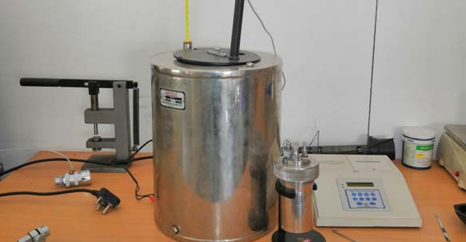
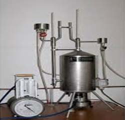
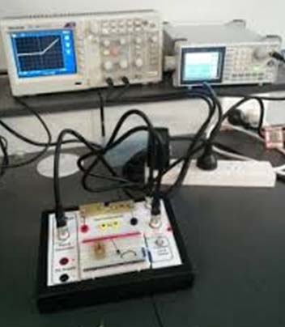

1. Solar Parabolic trough collector

The parabolic trough reflector when used as a solar thermal energy collector is
constructed as a long parabolic reflecting mirror which is usually painted a
reflective silver, or made from polished aluminium, or uses mirrors which
extends linearly into the trough shape.
2. 1kW Solar PV off grid system

This equipment is used to study:-
• influence of the workload on the efficiency of components
• influence of fluctuations in solar energy and/or electricity usage on the
overall system efficiency
3. 1 kW solar PV on-grid system

This PV grid is used to study:-
• application aspects of electrical components for photovoltaic systems
• efficiency and dynamic behaviour of system components in grid-connected and
stand-alone operation
4. Electrochemical workstation to test batteries, super capacitors, Fuel
Cells

Super-capacitors are energy storage devices similar to secondary batteries.
Unlike batteries, which use chemical reactions to store energy, super-capacitors
generally store energy through the physical separation of electrical charges.All
super-capacitors consist of two electrodes immersed in a conductive liquid or
conductive polymer called the electrolyte. The electrodes are separated by an
ionic-conducting separator that prevents shorts.
5.Bomb calorimeter

Purpose of Bomb Calorimetry Experimentis used to determine the enthalpy of
combustion
6. Gas calorimeter

This equipment is used to:-
• determination of exhaust gas thermal output power given up
• determination of specific heat capacity of exhaust gas
7. Radiation measurement equipment

This experiment setup is used to verify stefanslaw,lamberts cosine law,lamberts
distance law.
8.Solar still

A solar stilldistills water, using the heat of the Sun to evaporate water so
that it may be cooled and collected, thereby purifying it. They are used in
areas where drinking water is unavailable, so that clean water is obtained from
dirty water or from plants by exposing them to sunlight.
9. Flat plate and evacuated tube solar collector

Solar Flat-Plate Collector Based system is a replica of the solar water heating
system designed in a form of experimental setup to help students learn and
experience different parameters of performance of Flat Plate Collector System.
This system helps students in practical understanding of various technical
parameters such as Overall Heat Loss Co-efficient, Heat Removal Factor and
Efficiency at different flexible input parameters like radiation, wind speed
etc. The system has in built sensors which measure parameters like pressure,
temperature, flow rate etc, mounted on a control unit.
10. Thermal energy storage test

This system has been designed to perform TES related experiment by using PCM
materials. As there are several types of PCM, the system has been design to
perform experiment with at least two PCM separately. Provision is also kept to
examine the combine (known as cascading) effect of two PCMs in thermal energy
storage. To visualize the phase changes in the material another set of
arrangement are there in the system.
11. 11. I-V Tracer

List of No. of experiments:
o Study of properties of fuel oils & biomass, calorific value of Biomass
samples
o Testing of Gasifier: Effect of feedstock on heat output and pollutants
o Energy conservation study of IC Engine
o Fabrication of photovoltaic solar cell
o Performance assessment of PV modules: I-V Characteristics and Efficiency of
a Solar PV cell
o Measurement of Solar Radiation and study of efficiency of a Flat Plate
SolarCollector
o Piezo-electric energy harvesting: comparison of conversion efficiency of
different materials and effect of vibration frequency on conversion
efficiency
o Electrical machines characteristics
o Pollutant level measurement
o Boiler, Pump & motor efficiency testing
o Characterization of Refrigeration system
o Study of fuel cells and measurement of their efficiency
o Implementation of a solar powered pump
o Design and implementation of a solar powered home with 24/7 availability of
electricity
o Visit of Hydro-electric power plant
o Visit of Thermal power plant.